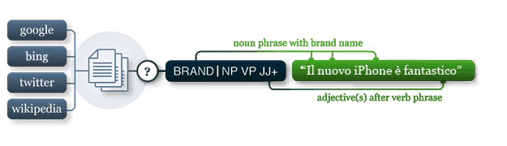

pattern.it
The pattern.it module contains a fast part-of-speech tagger for Italian (identifies nouns, adjectives, verbs, etc. in a sentence) and tools for Italian verb conjugation and noun singularization & pluralization.
It can be used by itself or with other pattern modules: web | db | en | search | vector | graph.

Documentation
The functions in this module take the same parameters and return the same values as their counterparts in pattern.en. Refer to the documentation there for more details.
Gender
Italian nouns and adjectives inflect according to gender. The gender() function predicts the gender (MALE, FEMALE, PLURAL) of a given noun with about 92% accuracy:
>>> from pattern.it import gender, MALE, FEMALE, PLURAL
>>> print gender('gatti')
(MALE, PLURAL)Article
The article() function returns the article (INDEFINITE or DEFINITE) inflected by gender (e.g., il gatto → i gatti).
>>> from pattern.it import article, DEFINITE, MALE, PLURAL
>>> print article('gatti', DEFINITE, gender=(MALE, PLURAL))
iNoun singularization & pluralization
For Italian nouns there is singularize() and pluralize(). The implementation is slightly less robust than the English version (accuracy 84% for singularization and 93% for pluralization).
>>> from pattern.it import singularize, pluralize
>>>
>>> print singularize('gatti')
>>> print pluralize('gatto')
gatto
gatti Verb conjugation
For Italian verbs there is conjugate(), lemma(), lexeme() and tenses(). The lexicon for verb conjugation contains about 1,250 common Italian verbs, mined from Wiktionary. For unknown verbs it will fall back to a rule-based approach with an accuracy of about 86%.
Italian verbs have more tenses than English verbs. In particular, the plural differs for each person, and there are additional forms for the FUTURE tense, the IMPERATIVE, CONDITIONAL and SUBJUNCTIVE mood and the PERFECTIVE aspect:
>>> from pattern.it import conjugate
>>> from pattern.it import INFINITIVE, PRESENT, PAST, SG, SUBJUNCTIVE, PERFECTIVE
>>>
>>> print conjugate('sono', INFINITIVE)
>>> print conjugate('sono', PRESENT, 1, SG, mood=SUBJUNCTIVE)
>>> print conjugate('sono', PAST, 3, SG)
>>> print conjugate('sono', PAST, 3, SG, aspect=PERFECTIVE)
essere
sia
era
fu For PAST tense + PERFECTIVE aspect we can also use PRETERITE (passato remoto) For PAST tense + IMPERFECTIVE aspect we can also use IMPERFECT (imperfetto).
>>> from pattern.it import conjugate
>>> from pattern.it import IMPERFECT, PRETERITE
>>>
>>> print conjugate('sono', IMPERFECT, 3, SG)
>>> print conjugate('sono', PRETERITE, 3, SG)
era
fu The conjugate() function takes the following optional parameters:
| Tense | Person | Number | Mood | Aspect | Alias | Example |
| INFINITVE | None | None | None | None | "inf" | essere |
| PRESENT | 1 | SG | INDICATIVE | IMPERFECTIVE | "1sg" | io sono |
| PRESENT | 2 | SG | INDICATIVE | IMPERFECTIVE | "2sg" | tu sei |
| PRESENT | 3 | SG | INDICATIVE | IMPERFECTIVE | "3sg" | lui è |
| PRESENT | 1 | PL | INDICATIVE | IMPERFECTIVE | "1pl" | noi siamo |
| PRESENT | 2 | PL | INDICATIVE | IMPERFECTIVE | "2pl" | voi siete |
| PRESENT | 3 | PL | INDICATIVE | IMPERFECTIVE | "3pl" | loro sono |
| PRESENT | None | None | INDICATIVE | PROGRESSIVE | "part" | essendo |
| PRESENT | 2 | SG | IMPERATIVE | IMPERFECTIVE | "2sg!" | sii |
| PRESENT | 3 | SG | IMPERATIVE | IMPERFECTIVE | "3sg!" | sia |
| PRESENT | 1 | PL | IMPERATIVE | IMPERFECTIVE | "1pl!" | siamo |
| PRESENT | 2 | PL | IMPERATIVE | IMPERFECTIVE | "2pl!" | siate |
| PRESENT | 3 | PL | IMPERATIVE | IMPERFECTIVE | "3pl!" | siano |
| PRESENT | 1 | SG | SUBJUNCTIVE | IMPERFECTIVE | "1sg?" | io sia |
| PRESENT | 2 | SG | SUBJUNCTIVE | IMPERFECTIVE | "2sg?" | tu sia |
| PRESENT | 3 | SG | SUBJUNCTIVE | IMPERFECTIVE | "3sg?" | lui sia |
| PRESENT | 1 | PL | SUBJUNCTIVE | IMPERFECTIVE | "1pl?" | noi siamo |
| PRESENT | 2 | PL | SUBJUNCTIVE | IMPERFECTIVE | "2pl?" | voi siate |
| PRESENT | 3 | PL | SUBJUNCTIVE | IMPERFECTIVE | "3pl?" | loro siano |
| PAST | 1 | SG | INDICATIVE | IMPERFECTIVE | "1sgp" | io ero |
| PAST | 2 | SG | INDICATIVE | IMPERFECTIVE | "2sgp" | tu eri |
| PAST | 3 | SG | INDICATIVE | IMPERFECTIVE | "3sgp" | lui era |
| PAST | 1 | PL | INDICATIVE | IMPERFECTIVE | "1ppl" | noi eravamo |
| PAST | 2 | PL | INDICATIVE | IMPERFECTIVE | "2ppl" | voi eravate |
| PAST | 3 | PL | INDICATIVE | IMPERFECTIVE | "3ppl" | loro erano |
| PAST | None | None | INDICATIVE | PROGRESSIVE | "ppart" | stato |
| PAST | 1 | SG | INDICATIVE | PERFECTIVE | "1sgp+" | io fui |
| PAST | 2 | SG | INDICATIVE | PERFECTIVE | "2sgp+" | tu fosti |
| PAST | 3 | SG | INDICATIVE | PERFECTIVE | "3sgp+" | lui fu |
| PAST | 1 | PL | INDICATIVE | PERFECTIVE | "1ppl+" | noi fummo |
| PAST | 2 | PL | INDICATIVE | PERFECTIVE | "2ppl+" | voi foste |
| PAST | 3 | PL | INDICATIVE | PERFECTIVE | "3ppl+" | loro furono |
| PAST | 1 | SG | SUBJUNCTIVE | IMPERFECTIVE | "1sgp?" | io fossi |
| PAST | 2 | SG | SUBJUNCTIVE | IMPERFECTIVE | "2sgp?" | tu fossi |
| PAST | 3 | SG | SUBJUNCTIVE | IMPERFECTIVE | "3sgp?" | lui fosse |
| PAST | 1 | PL | SUBJUNCTIVE | IMPERFECTIVE | "1ppl?" | noi fossimo |
| PAST | 2 | PL | SUBJUNCTIVE | IMPERFECTIVE | "2ppl?" | voi foste |
| PAST | 3 | PL | SUBJUNCTIVE | IMPERFECTIVE | "3ppl?" | loro fossero |
| FUTURE | 1 | SG | INDICATIVE | IMPERFECTIVE | "1sgf" | io sarò |
| FUTURE | 2 | SG | INDICATIVE | IMPERFECTIVE | "2sgf" | tu sarai |
| FUTURE | 3 | SG | INDICATIVE | IMPERFECTIVE | "3sgf" | lui sarà |
| FUTURE | 1 | PL | INDICATIVE | IMPERFECTIVE | "1plf" | noi saremo |
| FUTURE | 2 | PL | INDICATIVE | IMPERFECTIVE | "2plf" | voi sarete |
| FUTURE | 3 | PL | INDICATIVE | IMPERFECTIVE | "3plf" | loro saranno |
| CONDITIONAL | 1 | SG | INDICATIVE | IMPERFECTIVE | "1sg->" | io sarei |
| CONDITIONAL | 2 | SG | INDICATIVE | IMPERFECTIVE | "2sg->" | tu saresti |
| CONDITIONAL | 3 | SG | INDICATIVE | IMPERFECTIVE | "3sg->" | lui sarebbe |
| CONDITIONAL | 1 | PL | INDICATIVE | IMPERFECTIVE | "1pl->" | noi saremmo |
| CONDITIONAL | 2 | PL | INDICATIVE | IMPERFECTIVE | "2pl->" | voi sareste |
| CONDITIONAL | 3 | PL | INDICATIVE | IMPERFECTIVE | "3pl->" | loro sarebbero |
Instead of optional parameters, a single short alias, or PARTICIPLE or PAST+PARTICIPLE can also be given. With no parameters, the infinitive form of the verb is returned.
Attributive & predicative adjectives
Italian adjectives inflect with suffixes -o → -i (masculine) and -a → -e (feminine), with some exceptions (e.g., grande → i grandi felini). You can get the base form with the predicative() function. A statistical approach is used with an accuracy of 88%.
>>> from pattern.it import attributive
>>> print predicative('grandi')
grande Parser
For parsing there is parse(), parsetree() and split(). The parse() function annotates words in the given string with their part-of-speech tags (e.g., NN for nouns and VB for verbs). The parsetree() function takes a string and returns a tree of nested objects (Text → Sentence → Chunk → Word). The split() function takes the output of parse() and returns a Text. See the pattern.en documentation (here) how to manipulate Text objects.
>>> from pattern.it import parse, split
>>>
>>> s = parse('Il gatto nero faceva le fusa.')
>>> for sentence in split(s):
>>> print sentence
Sentence('Il/DT/B-NP/O gatto/NN/I-NP/O nero/JJ/I-NP/O'
'faceva/VB/B-VP/O'
'le/DT/B-NP/O fusa/NN/I-NP/O ././O/O')
The parser is mined from Wiktionary. The accuracy is around 92%.
Sentiment analysis
There's no sentiment() function for Italian yet.